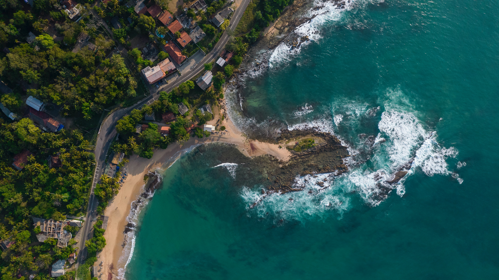
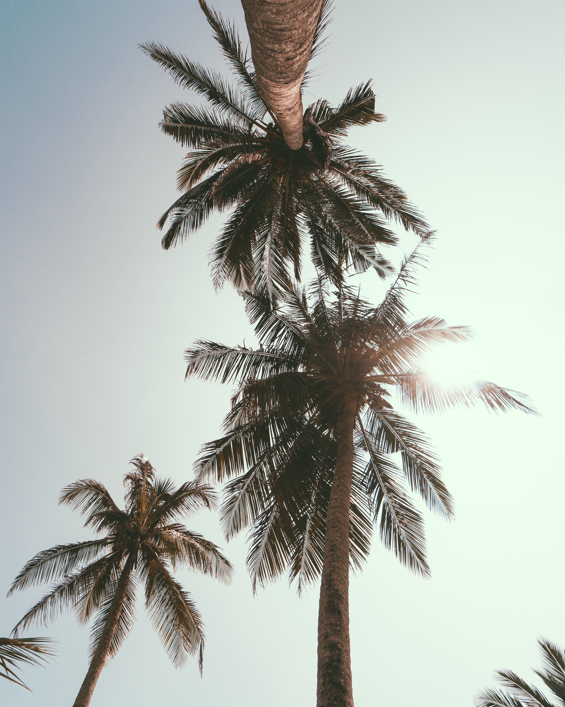

ENJOY
THE

BEAUTY OF

Hikkaduwa
Conservation efforts: The Hikkaduwa Turtle Hatchery plays a vital role in conserving endangered sea turtles through its dedicated initiatives, including protecting nests, hatching and releasing baby turtles, and raising awareness about the importance of turtle conservation in the local community.
Educational experience: Visitors to the hatchery have the opportunity to learn about different turtle species, witness the nesting process, and actively participate in releasing baby turtles into the ocean. Interactive sessions and informative talks provide valuable insights into the challenges faced by turtles and the efforts to protect them.
Eco-tourism destination: The hatchery attracts eco-conscious travelers seeking meaningful experiences. By supporting the hatchery, visitors contribute to sustainable tourism practices and directly help the conservation efforts. The hatchery also acts as a platform for promoting environmental awareness and fostering a sense of responsibility towards protecting marine life.